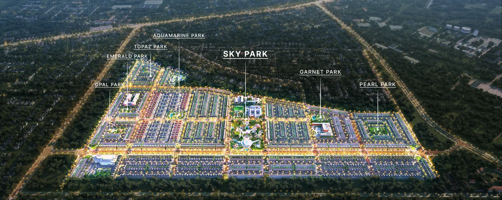
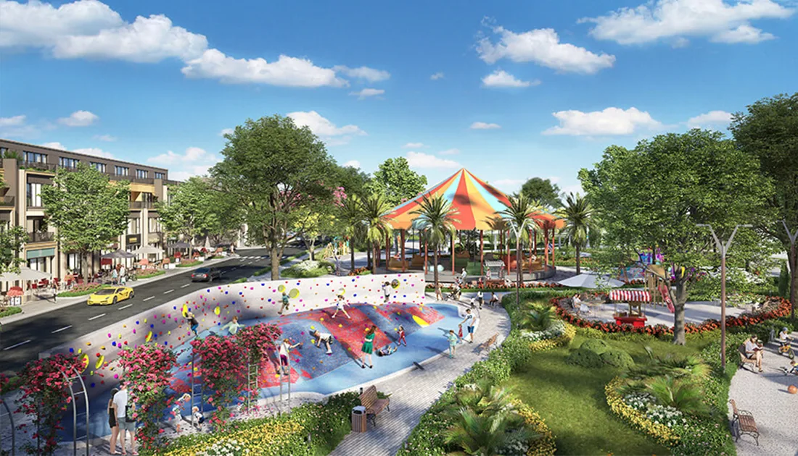

Đất nền
Phù hợp nhóm mua giữ tài sản trung hạn, cần ưu tiên lô dễ thanh khoản, pháp lý rõ và biên độ giá vào hợp lý.
Gem Sky World Long Thành | Đô thị sân bay 92,2 ha
KINGMANS phân tích Gem Sky World theo góc nhìn cố vấn: vị trí Long Đức, quy hoạch 92,2 ha, Sky Park 3 ha, sản phẩm thấp tầng, pháp lý cần kiểm chứng và kịch bản khai thác khi sân bay Long Thành vận hành.
Tổng quan dự án
Gem Sky World là khu đô thị thương mại - giải trí tại Long Đức, Long Thành, Đồng Nai. Theo website dự án, khu đô thị có quy mô 92,2 ha, chủ đầu tư là Công ty CP Đầu tư Kinh doanh Bất động sản Hà An, đơn vị phát triển dự án là Đất Xanh Group.
Điểm hấp dẫn của Gem Sky World nằm ở ba lớp: quỹ đất lớn gần vùng sân bay Long Thành, hệ tiện ích có Sky Park và công viên nội khu, cùng khả năng hình thành nhu cầu ở - thuê - kinh doanh khi hạ tầng liên vùng hoàn thiện. Tuy nhiên, giá trị đầu tư chỉ rõ ràng khi kiểm tra được pháp lý từng sản phẩm, tiến độ hạ tầng xã hội và giá giao dịch thực tế.
Vị trí & hạ tầng
Vị trí Gem Sky World cần được nhìn như một điểm nằm trong tam giác sân bay Long Thành, cao tốc TP.HCM - Long Thành - Dầu Giây và các khu công nghiệp lân cận. Khi sân bay đi vào vận hành, khu vực này có thể đón thêm nhu cầu lưu trú, thương mại, dịch vụ và nhà ở cho đội ngũ chuyên gia, kỹ sư, nhân sự logistics.
Nhưng lợi thế vị trí chỉ chuyển hóa thành giá trị nếu kết nối thực tế thuận tiện, hạ tầng nội khu vận hành ổn định và sản phẩm có khả năng tạo dòng tiền hoặc thanh khoản thứ cấp.
Quy hoạch & tiện ích
Điểm khác biệt của Gem Sky World không nằm ở từng lô đất đơn lẻ, mà nằm ở khả năng hình thành một đô thị có cư dân, tiện ích, hoạt động thương mại và không gian công cộng. Đây là yếu tố quyết định thanh khoản dài hạn.

Sản phẩm
Gem Sky World có nhiều nhóm sản phẩm thấp tầng. KINGMANS khuyến nghị chọn sản phẩm theo kế hoạch nắm giữ, khả năng khai thác và mức vốn an toàn, thay vì chỉ nhìn vào vị trí trên bản đồ phân khu.
Phù hợp nhóm mua giữ tài sản trung hạn, cần ưu tiên lô dễ thanh khoản, pháp lý rõ và biên độ giá vào hợp lý.
Có thể dùng để ở, cho thuê hoặc làm văn phòng dịch vụ khi mật độ cư dân và tiện ích tăng lên.
Tiềm năng kinh doanh cao hơn nhưng phụ thuộc mạnh vào dòng khách, cư dân thực và năng lực vận hành thương mại.
Phù hợp nhà đầu tư vốn lớn, cần kiểm tra kỹ chi phí sở hữu, tệp khách thuê và thời gian hoàn vốn.
Câu chuyện sân bay Long Thành
Thông tin từ cơ quan nhà nước trong năm 2026 tiếp tục nhấn mạnh mục tiêu đưa sân bay Long Thành giai đoạn 1 vào khai thác. Khi sân bay vận hành, nhu cầu lưu trú, logistics, dịch vụ phụ trợ và nhà ở cho chuyên gia có cơ sở tăng lên theo từng giai đoạn.
Với Gem Sky World, bài toán đầu tư nên được chia theo mốc thời gian: trước vận hành sân bay, giai đoạn sân bay khai thác ban đầu và giai đoạn đô thị - dịch vụ xung quanh sân bay trưởng thành hơn. Nhà đầu tư không nên mặc định mọi sản phẩm đều tăng giá như nhau.
Kiểm tra tiến độ vận hành thương mại, kết nối giao thông vào sân bay và tác động thực tế tới nhu cầu lưu trú.
Quan sát cư dân về ở, giá thuê nhà phố/shophouse, tần suất kinh doanh và tỷ lệ lấp đầy tiện ích.
Giá trị bền vững phụ thuộc vào khả năng Gem Sky World trở thành đô thị sống thật, không chỉ là tài sản chờ tăng giá.
Hình ảnh dự án

Pháp lý cần kiểm chứng
Website dự án nêu các hồ sơ như giấy chứng nhận quyền sử dụng đất, phê duyệt quy hoạch chi tiết 1/500 và giấy chứng nhận sở hữu nhà ở cho từng căn. Tuy nhiên, với giao dịch thực tế, người mua vẫn cần kiểm tra hồ sơ cập nhật tại thời điểm ký, tình trạng cấp sổ từng sản phẩm và các nghĩa vụ tài chính liên quan nếu có.
Giá tham khảo & dòng tiền
Các mức dưới đây là khung tham khảo thị trường tổng hợp, không phải bảng giá chính thức. Khi tư vấn, KINGMANS sẽ lập bảng riêng theo sản phẩm cụ thể, vị trí, pháp lý, tình trạng bàn giao và mục tiêu vốn của khách hàng.
| Loại hình | Giá tham khảo 2026 | Phù hợp với | Điểm cần hỏi trước khi mua |
|---|---|---|---|
| Đất nền | Khoảng 2,3 - 3,3 tỷ đồng/lô | Mua giữ tài sản, tích sản trung hạn | Sổ, vị trí lô, khả năng sang nhượng và giá giao dịch thật. |
| Nhà phố xây sẵn | Khoảng 4,5 - 7 tỷ đồng/căn | Ở, cho thuê, văn phòng dịch vụ | Tiến độ bàn giao, chi phí hoàn thiện, nhu cầu thuê quanh khu vực. |
| Shophouse đại lộ | Khoảng 9 - 20 tỷ đồng/căn | Khai thác kinh doanh, nắm giữ vốn lớn | Dòng khách, mật độ cư dân, vị trí mặt tiền, thời gian hoàn vốn. |
| Cho thuê shophouse | Khoảng 10 - 40 triệu đồng/tháng | Nhà đầu tư cần dòng tiền | Tỷ lệ trống, ngành thuê phù hợp và chi phí vận hành thực tế. |
Lưu ý: Không nên dùng chính sách bán hàng hoặc kỳ vọng sân bay làm cơ sở duy nhất để vay vốn. Với sản phẩm thấp tầng, biên an toàn tài chính nên được tính theo kịch bản giữ 3-5 năm.
Có nên mua Gem Sky World?
Phù hợp nếu gia đình làm việc quanh Long Thành, Đồng Nai hoặc cần không gian thấp tầng. Cần kiểm tra trường học, y tế, tiện ích đã vận hành và kết nối đi làm thực tế.
Chỉ nên xuống tiền khi có kịch bản thuê rõ: ai thuê, thuê để ở hay kinh doanh, giá thuê kỳ vọng, tỷ lệ trống và thời gian hoàn vốn.
Phù hợp tầm nhìn 3-5 năm trở lên, ưu tiên sản phẩm pháp lý rõ, vị trí dễ thanh khoản, không dùng đòn bẩy quá cao và có kế hoạch thoát hàng.
Nguồn tham khảo
KINGMANS không thay thế hồ sơ pháp lý chính thức của chủ đầu tư, ngân hàng hoặc cơ quan nhà nước. Các thông tin giá, tiến độ, pháp lý cần được đối chiếu lại tại thời điểm khách hàng giao dịch.
Sân bay Long Thành, cao tốc và khu công nghiệp tạo nền tảng nhu cầu dài hạn.
Phải đối chiếu hồ sơ từng lô/căn, tình trạng cấp sổ và nghĩa vụ tài chính tại thời điểm mua.
Không nên dùng kỳ vọng thuê thay cho khảo sát thực tế giá thuê, tệp khách và tỷ lệ trống.
Với thị trường thấp tầng sân bay, biên an toàn nằm ở tầm nhìn trung dài hạn.
Câu hỏi thường gặp
Theo website dự án, chủ đầu tư là Công ty CP Đầu tư Kinh doanh Bất động sản Hà An, đơn vị phát triển dự án là Đất Xanh Group.
Website dự án công bố thời gian tham chiếu khoảng 5 phút tới sân bay Long Thành. Khi tư vấn, KINGMANS sẽ kiểm tra lại theo tuyến đường thực tế và thời điểm di chuyển.
Đất nền phù hợp mua giữ tài sản với vốn vừa hơn. Shophouse phù hợp vốn lớn và có kế hoạch khai thác kinh doanh rõ ràng. Không nên chọn shophouse chỉ vì kỳ vọng sân bay nếu chưa có bài toán dòng tiền.
Cần kiểm tra giấy tờ sở hữu, hợp đồng gốc, nghĩa vụ tài chính, tình trạng sang nhượng, phí phát sinh, quy định xây dựng và tiến độ hạ tầng xung quanh sản phẩm.
Nhận tư vấn riêng
Bạn sẽ nhận được bảng kiểm tra nhanh gồm: loại hình phù hợp, vùng giá tham khảo, pháp lý cần hỏi, dòng tiền dự kiến, rủi ro thanh khoản và kịch bản nắm giữ 3-5 năm.